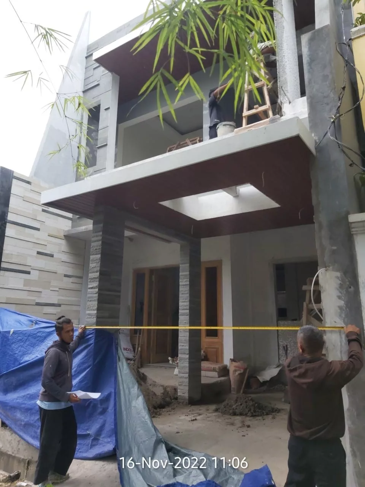

Profil Marga Kontraktor
Mengenal lebih dekat usaha jasa desain arsitektur dan konstruksi rumah tinggal yang mengutamakan keterbukaan anggaran serta ketepatan pengerjaan.
Mitra Terpercaya Membangun Rumah Tinggal Anda
Marga Kontraktor merupakan usaha jasa desain arsitektur, penyusunan RAB, dan konstruksi rumah tinggal yang dikelola langsung oleh Bapak Arpi Setiawan. Kami melayani pembangunan rumah baru untuk perorangan maupun pemilik tanah kavling, serta renovasi fasad dan eksterior.
Setiap proyek dijalankan dengan prinsip komunikasi satu pintu, keterbukaan biaya sejak awal, dan pelaporan progres mingguan agar pemilik rumah merasa aman tanpa harus datang ke lokasi setiap hari.
 Eksekusi Lapangan
Eksekusi Lapangan

Kontrol Gambar Kerja Hasil Serah Terima
Hasil Serah Terima
4 Prinsip Kerja Marga Kontraktor
Standar yang selalu kami pegang pada setiap pembangunan rumah baru maupun proyek renovasi.
Desain Mengikuti Budget
Konsep bangunan dan pilihan material disesuaikan sejak awal dengan batas dana yang Anda siapkan.
RAB Terbuka & Rinci
Seluruh pos pekerjaan, volume, dan spesifikasi material dijelaskan transparan sebelum kontrak dimulai.
Laporan Progres Mingguan
Setiap minggu Anda menerima foto perkembangan pekerjaan lapangan beserta rekap penggunaan biaya.
Presisi Sesuai Desain 3D
Pengawasan teknis rutin memastikan proporsi fasad, tata ruang, dan struktur terealisasi sesuai rancangan.
Ingin Melihat Cakupan Layanan dan Hasil Karya Kami?
Pelajari rincian layanan yang tersedia atau jelajahi galeri 6 proyek asli yang telah kami kerjakan.